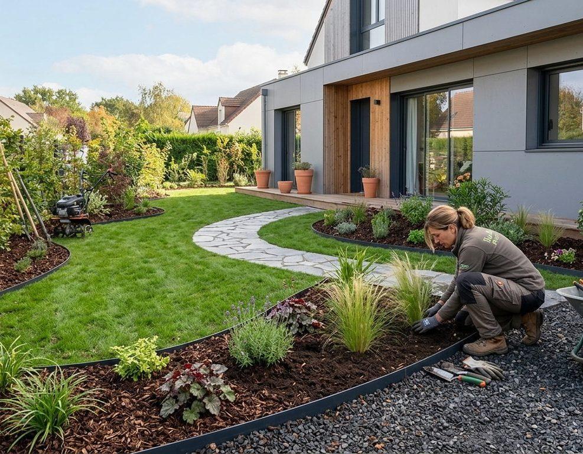
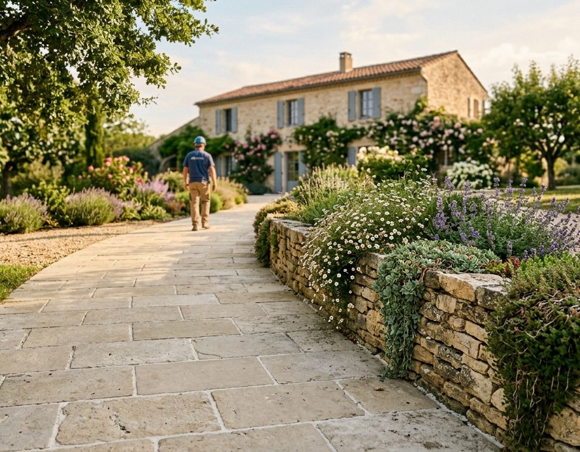
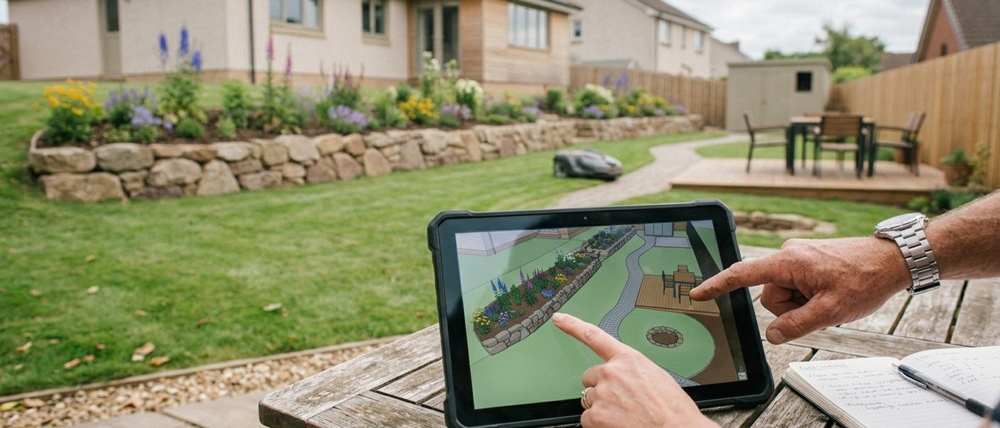

Paysagiste à Maule (78)
Jardins créés et entretenus à Maule
Envies de jardins aménage et entretient vos espaces verts à Maule et dans les environs. Parlez de votre projet à Mathieu Bezivin.

- Créationde jardins et de massifs
- Entretientonte, haies et désherbage
- Mauleet alentours (78)
Nos prestations
Du jardin créé au jardin entretenu
Création, plantation, entretien et aménagements extérieurs : un seul interlocuteur pour vos espaces verts.

Création de jardins
Conception du jardin et création de massifs adaptés à votre terrain et à vos usages.
En savoir plus →
Plantation et engazonnement
Plantation d'arbustes et de haies, puis mise en place de la pelouse sur un sol préparé.
En savoir plus →
Entretien de jardins
Tonte, taille de haies, désherbage des massifs et ramassage des feuilles.
En savoir plus →
Aménagements extérieurs
Allées, terrasses et petite maçonnerie paysagère pour prolonger votre maison.
En savoir plus →
À propos
Un paysagiste à Maule
Mathieu Bezivin dirige Envies de jardins, entreprise de services d'aménagement paysager installée à Maule, dans les Yvelines.
Création, plantation et entretien d'espaces verts : appelez-le pour présenter votre projet.
En savoir plusContact
Un projet de jardin ? Parlons-en.
Décrivez-nous votre projet : nous vous répondons pour préparer un devis.